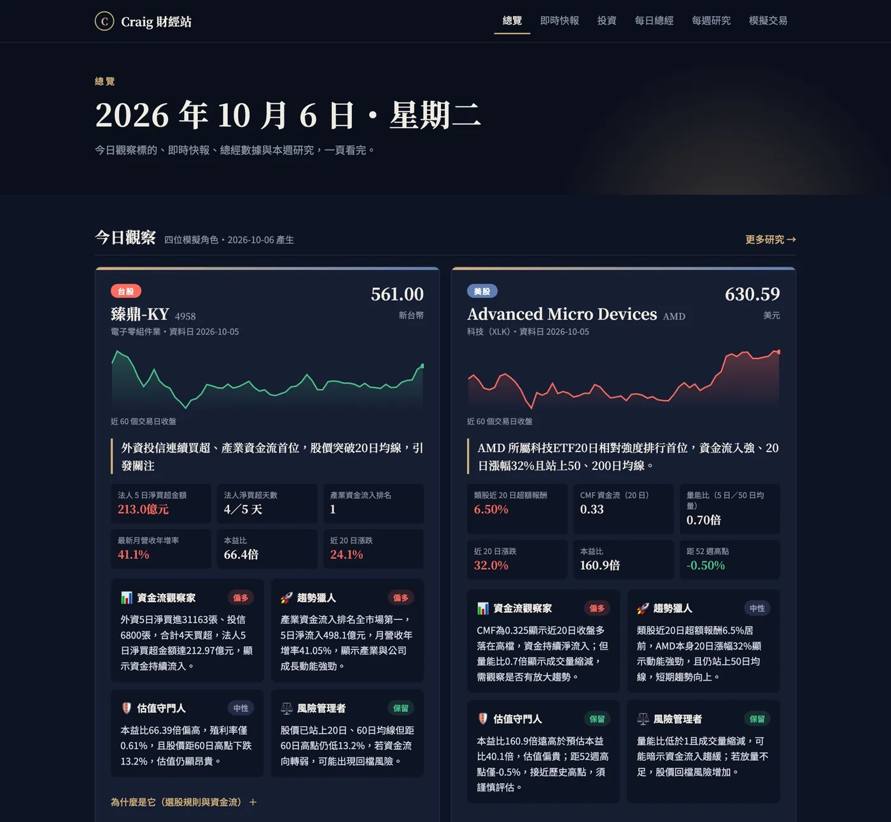
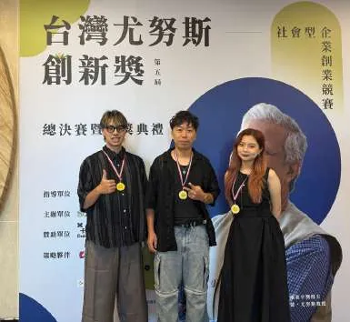
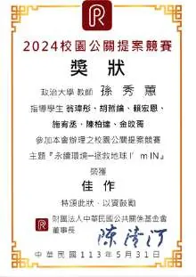
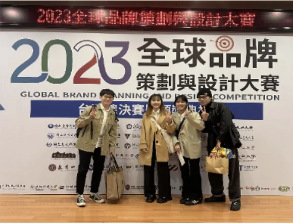
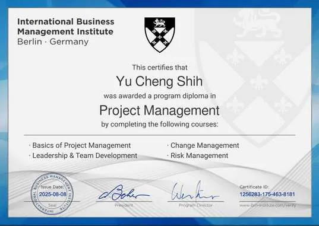
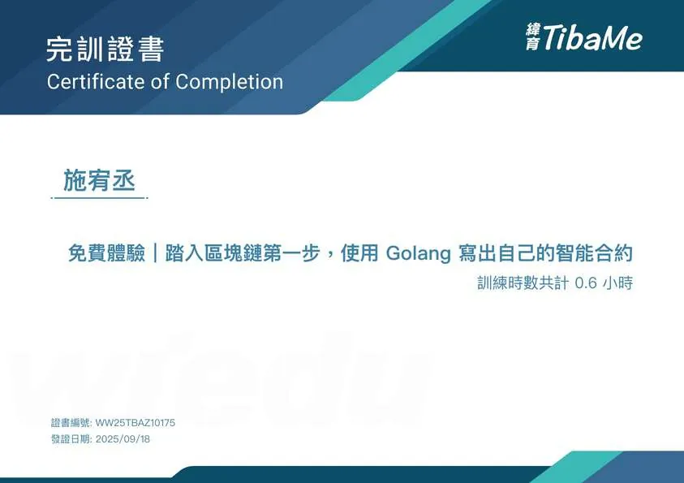

最新專案 · AI 協作 × 產品開發
Craig 財經站
把四個財經自動化專案整合成一個每日自動更新的網站：總經新聞、台美股研究、持股對帳與模擬交易。我負責產品規劃與驗收，程式由 AI 撰寫。

Hi，我是 施宥丞 Craig — 政大廣告系畢業、科智所在學
這裡放的不是履歷條列，是我親手從零做到上線的專案：當時面對的問題、我實際做的事，以及可以驗證的成果。
施宥丞 Yu Cheng, Shih傳播 × 科技 × 商業
最高觀看
65萬+
單支短影音觀看
亞馬遜全球開店 →
開信率
87%
台灣市場 EDM（200+ 間企業）
On-us 摩揪 →
報名轉化
40%
校園說明會現場註冊轉化
亞馬遜人才培育計畫 →
實戰年資
3年1個月
實習與合作年資
金融科技・電商・公關・媒體
最新專案 · AI 協作 × 產品開發
把四個財經自動化專案整合成一個每日自動更新的網站：總經新聞、台美股研究、持股對帳與模擬交易。我負責產品規劃與驗收，程式由 AI 撰寫。

關於我 About
我的起點是廣告與廣播——研究人怎麼被說服、怎麼被打動。後來發現，真正難的是讓一個聽不懂技術的市場，願意相信一個新的金融或電商產品。
於是我一路往科技與商業靠：在金融科技新創經營社群、為銀行與虛擬貨幣交易所做公關策略、替香港 FinTech 打開台灣市場、在亞馬遜做跨境電商的內容與營運。同時自學 Google Cloud、生成式 AI、區塊鏈與 Python 補足技術底子。
八個案例，每一件都寫了當時面對的問題、我實際做的事，以及可以驗證的成果。

01 · 專案管理 × 活動執行
7 人團隊・200 人報名・40% 轉化
Amazon Global Selling看案例 →

02 · 內容成長 × 社群自動化
觀看成長 500%+・單支 65 萬觀看
Amazon Global Selling看案例 →

03 · 市場進入 × 數位體驗
EDM 開信率 87%・LinkedIn 5 萬瀏覽
On-us（摩揪台灣）看案例 →

04 · 內容生產 × 品牌建立
百部短影音・單支破萬觀看
夢想銀號金融科技看案例 →

05 · 公關策略 × 金融科技
銀行・虛擬貨幣交易所・AI 新創
布爾喬亞公關顧問看案例 →

06 · 賽事企劃 × 贊助洽談
8 間贊助・40 組參賽・2.7 萬觸及
存在音樂 Being Music看案例 →

07 · 內容創作 × 節目製作
節目共同創立・藝美獎入圍
政大之聲實習廣播電台看案例 →
08 · AI 協作 × 產品開發
4 個自動化專案整合・每日自動更新
個人專案看案例 →
有案例頁的可以點進去看細節；其餘規模較小的直接寫在這裡。
Marketing 實習・T-Ambassador
行銷企劃實習生・首位台灣市場行銷
約聘公關顧問・第一任專任校園大使
行銷外包合作｜金賓威士忌 Jim Beam
負責「金賓嗨店」活動短影音剪輯；協助尋找 KOL 合作夥伴並分析受眾特性、互動品質與風格契合度；參與活動波段規劃，設計從預熱、高潮到延續階段的節奏性行銷策略。
外包 Podcast 剪輯
獨立完成 12 集節目的完整後製，包含片頭設計、結尾音效編排、音頻平衡、雜音消除與語音清晰度優化，並參與現場錄製。
暑期實習生・賽事社群主導
策略行銷部・金融服務與社群企劃實習生
產學合作・社團幹部・活動主持
代表廣告系與利伯他茲教育基金會產學合作，管理其 Instagram；擔任傳院系學會公關組長、廣告營課程組員（帶領小隊獲最佳簡報獎）、吉他社器材長、政大金旋獎 42 屆初賽主持人。
一級助理・節目共同創立與主持
都是團隊作品，我標註了自己的實際貢獻比例與負責環節。

社會組 佳作｜3 萬元創業獎金
由諾貝爾和平獎得主尤努斯博士授權的基金會主辦，強調「用商業邏輯實現社會價值」。從 236 支團隊中入選總決賽 10 組，決賽獲前 6 名。

佳作｜134 組取 15 組・貢獻 20%
負責消費者洞察分析與策略發展。設計並執行針對 Z 世代的定性研究，提出的「物質與心理回饋」洞察成為整體策略基石。

入圍複賽｜349 隊取 48 組・貢獻 25%
擔任品牌策略分析師，運用品牌資產評估工具診斷定位、透過競爭者分析找出藍海機會，設計品牌進化策略框架。
佳作｜全班 8 組・貢獻 25%
負責使用者研究與介面設計，透過深度訪談與使用者旅程分析識別痛點，將概念轉化為可測試的高保真原型。
廣告系出身的人要進科技與金融，缺的通常不是熱情，是可驗證的底層知識。以下是我用課餘時間補起來的部分。
常用工具 Tools

